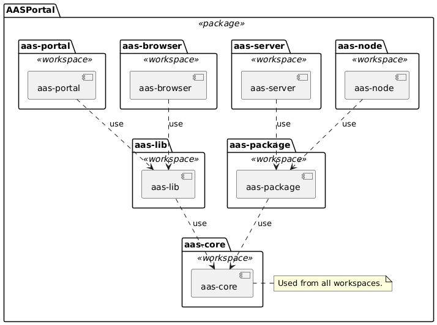

AASPortal
AASPortal 

AASPortal is a Node.js based web portal for the visualization and management of Asset Administration Shells (AAS). The implementation uses the concepts of the document "Details of the Asset Administration Shell" published on https://www.plattform-i40.de and licensed under Creative Commons CC BY 4.0. Check out the Getting Started section to learn how to setup Visual Studio Code and start using and developing the AASPortal. Learn more about the Architecture of AASPortal, and check out the Usage section to learn about available search filters for AAS and which Endpoints can be connected to the AASPortal.
For more details about the AASPortal see the full documentation :blue_book: here. AASPortal is under active development and we are looking forward to your active contributions!
Prerequisites
- Node.js v22.12.0 (required for development)
- Visual Studio Code (recommended IDE)
- Docker Desktop 4.x OR Podman Desktop (for containerized development)
- Git (for version control)
Getting Started
You can find a detailed documentation :blue_book: here
Using Docker/Podman (Easiest)
Run the all-in-one image from DockerHub:
# Docker
docker run -p 80:80 fraunhoferiosb/aasportal_aio
# Podman
podman run -p 80:80 docker.io/fraunhoferiosb/aasportal_aio
Then open http://localhost/ in your browser.
Local Development Setup
-
Clone the repository:
git clone https://github.com/FraunhoferIOSB/AASPortal.git
cd AASPortal -
Install dependencies:
npm install -
Build all workspaces:
npm run build -ws -
Start the development server:
npm run serve -
Open http://localhost/ in your browser
Workspace Architecture
AASPortal is a monorepo using npm workspaces with the following distinct packages:

The technology stack for the entire project is: Typescript, ESM (ECMAScript modules) and Jest as test framework.
| Workspace | Description | Technology Stack |
|---|---|---|
| aas-core | Provides platform neutral type definitions, AAS data models and utility functions. | TypeScript, AAS core 3.0 |
| aas-package | Node.js library for reading and writing AASX package files (JSON/XML, V1/V2/V3 support). | TypeScript, JSZip, xpath |
| aas-node | The AASPortal backend server application. | Express.js, OpenAPI/Swagger (TSOA), WebDav-Client |
| aas-lib | Reusable Angular UI components and services for AAS applications. | Angular 20.x, Bootstrap 5 |
| aas-portal | The AASPortal Web application for AAS visualization and management. | Angular 20.x, Bootstrap 5, NgRx |
| aas-server | An AAS server application with an API that is conform to the IDTA Part 2 specification. | Node.js, Express.js, OpenAPI/Swagger (TSOA) |
| aas-browser | Front-end application for the AASServer for browsing its content. | Angular 20.x, Bootstrap 5 |
Development Commands
Building
npm run build # Build all workspaces (production)
npm run build:debug # Build all workspaces (development)
npm run lib:build # Build only aas-core and aas-lib
npm run aas-portal:build # Build frontend dependencies + aas-portal
npm run aas-node:build # Build backend dependencies + aas-node
Testing
npm run test # Run tests in all workspaces
npm run test -w aas-core # Run tests for specific workspace
npm run coverage # Generate coverage reports
Code Quality
npm run lint # Lint all workspaces
npm run format # Format all workspaces
npm run lint -w aas-portal # Lint specific workspace
Container Development
Docker:
npm run start # Build and run complete Docker setup
npm run user-db # Start MongoDB for user storage
npm run compose:up # Full multi-service setup
Podman:
npm run start:podman # Build and run complete Podman setup
npm run user-db:podman # Start MongoDB for user storage
npm run compose:up:podman # Full multi-service setup
Troubleshooting
Container Networking Issues
When adding AAS endpoints that run on the host machine (localhost), remember that containers have isolated networking:
❌ Problem: http://localhost:5001 fails with "invalid or not supported AAS endpoint"
✅ Solution: Use container-to-host networking:
- Podman:
http://host.containers.internal:5001 - Docker:
http://host.docker.internal:5001 - Alternative: Use the host's actual IP address instead of localhost
Example endpoint URLs for containerized AASPortal:
# ✅ Correct
http://host.containers.internal:5001 # Podman
http://host.docker.internal:5001 # Docker
http://192.168.1.100:5001 # Host IP
# ❌ Wrong
http://localhost:5001 # Container's localhost
http://127.0.0.1:5001 # Container's loopback
Common Development Issues
Build fails: Ensure Node.js v22.12.0 is installed
node --version # Should output v22.12.0
Tests fail: Run tests individually to isolate issues
npm run test -w aas-core -- --verbose
Linting errors: Auto-fix most issues
npm run format # Auto-format code
npm run lint -- --fix # Auto-fix linting issues
Changelog
You can find the detailed changelog here.
Contributors
| Name | Github Account |
|---|---|
| Ralf Aron | ralfaron |
| Alexander Wollbrink | AlexanderWollbrink |
| Juilee Tikekar | juileetikekar |
| Florian Pethig | fpethig |
Contact
aasportal@iosb-ina.fraunhofer.de
License
Distributed under the Apache 2.0 License. See LICENSE for more information.
Copyright (C) 2019-2025, Fraunhofer IOSB-INA Lemgo, eine rechtlich nicht selbstaendige Einrichtung der Fraunhofer-Gesellschaft zur Foerderung der angewandten Forschung e.V., Germany
You should have received a copy of the Apache 2.0 License along with this program. If not, see https://www.apache.org/licenses/LICENSE-2.0.html.